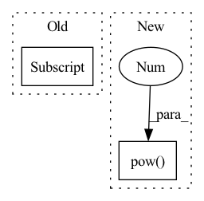

Pattern ID :2241

Before Change
dice0 = 2 * (pred[:,0] * target[:,0]).sum(dim=1).sum(dim=1).sum(dim=1) / (pred[:,0].pow(2).sum(dim=1).sum(dim=1).sum(dim=1) +
target[:,0].pow(2).sum(dim=1).sum(dim=1).sum(dim=1) + smooth)
dice1 = 2 * (pred[:,1] * target[:,1]).sum(dim=1).sum(dim=1).sum(dim=1) / (pred[:,1].pow(2).sum(dim=1).sum(dim=1).sum(dim=1) +
target[:,1].pow(2).sum(dim=1).sum(dim=1).sum(dim=1) + smooth)
dice = (dice1+dice0) / 2.0
// 返回的是dice距离
return torch.clamp((1 - dice).mean(), 0, 1)
After Change
smooth = 1
// dice系数的定义
dice = 2 * (pred * target).sum(dim=1).sum(dim=1).sum(dim=1) / (pred.pow(2).sum(dim=1).sum(dim=1).sum(dim=1) +
target.pow(2).sum(dim=1).sum(dim=1).sum(dim=1) + smooth)
// 返回的是dice距离
In pattern: SUPERPATTERN
Frequency: 3
Non-data size: 2
Instances
Fragment ID: 14277177
Project Name: lee-zq/3dunet-pytorch
Commit Name: 5503c174b8875343fe4812ebb0dcbe77346a348a
Time: 2021-05-21
Author: zq_lee@163.com
File Name: loss/Dice.py
M Class Name: DiceLoss
N Class Name: DiceLoss
M Method Name: forward(3)
N Method Name: forward(3)
M Parent Class: nn.Module
N Parent Class: nn.Module
M File Name: loss/Dice.py
N File Name: loss/Dice.py
M Start Line: 19
M End Line: 26
N Start Line: 17
N End Line: 23
'>
Before Change
minibatch standard deviation
"""
def forward(self, x):
std = torch.std(x).expand(x.shape[0], 1, *x.shape[2:])
return torch.cat([x, std], dim=1)
class Blur2d(nn.Module):
After Change
"""Pixel Normalization"""
class PixelNorm(nn.Module):
def forward(self, x):
x = x / x.pow(2).mean(dim=1, keepdim=True).sqrt().add_(1e-4)
return x
"""
'>
Fragment ID: 14277178
Project Name: stomoya/animeface
Commit Name: b3652bae109c713da926d5532eb014b02135da52
Time: 2020-12-14
Author: blackie0110@gmail.com
File Name: implementations/StyleGAN2/model.py
M Class Name: MiniBatchStd
N Class Name: PixelNorm
M Method Name: forward(2)
N Method Name: forward(2)
M Parent Class: nn.Module
N Parent Class: nn.Module
M File Name: implementations/StyleGAN2/model.py
N File Name: implementations/StyleGAN2/model.py
M Start Line: 124
M End Line: 125
N Start Line: 254
N End Line: 255
'>
Before Change
dice_loss *= self.weight[i]
total_loss += dice_loss
return total_loss/target.shape[1]
After Change
dice = 0.
// dice系数的定义
for i in range(pred.size(1)):
dice += 2 * (pred[:,i] * target[:,i]).sum(dim=1).sum(dim=1).sum(dim=1) / (pred[:,i].pow(2).sum(dim=1).sum(dim=1).sum(dim=1) +
target[:,i].pow(2).sum(dim=1).sum(dim=1).sum(dim=1) + smooth)
// 返回的是dice距离
dice = dice / pred.size(1)
'>
Fragment ID: 14277169
Project Name: lee-zq/3dunet-pytorch
Commit Name: 070a8816879b33e97a9541e35cc5b2bfaf1bcd76
Time: 2021-05-22
Author: zq_lee@163.com
File Name: utils/loss.py
M Class Name: DiceLoss
N Class Name: DiceLoss
M Method Name: forward(3)
N Method Name: forward(3)
M Parent Class: nn.Module
N Parent Class: nn.Module
M File Name: utils/loss.py
N File Name: utils/loss.py
M Start Line: 78
M End Line: 93
N Start Line: 18
N End Line: 27